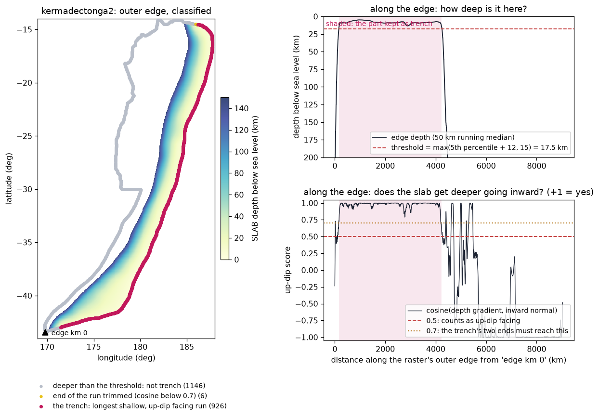
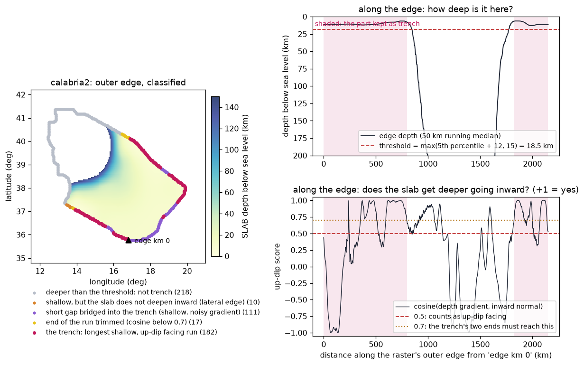
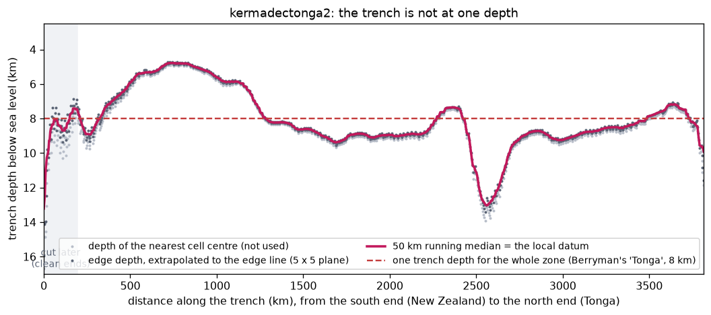
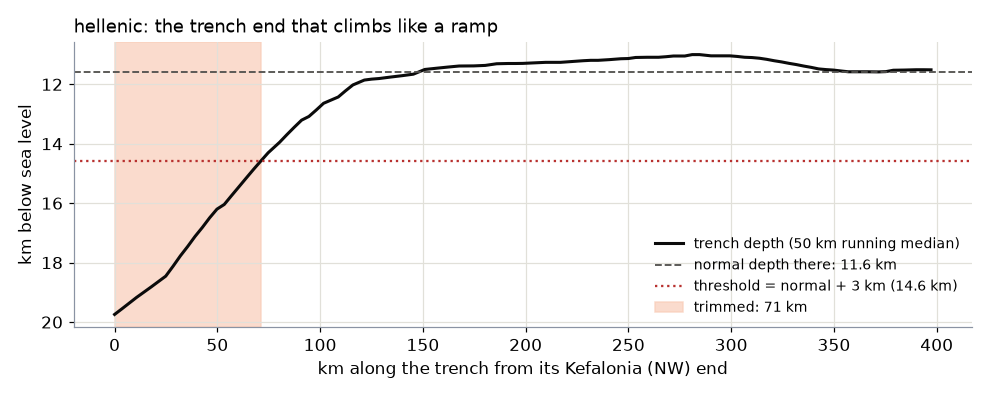
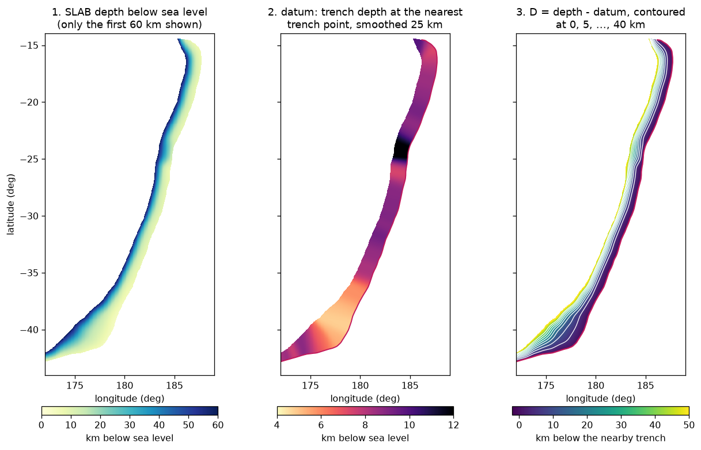
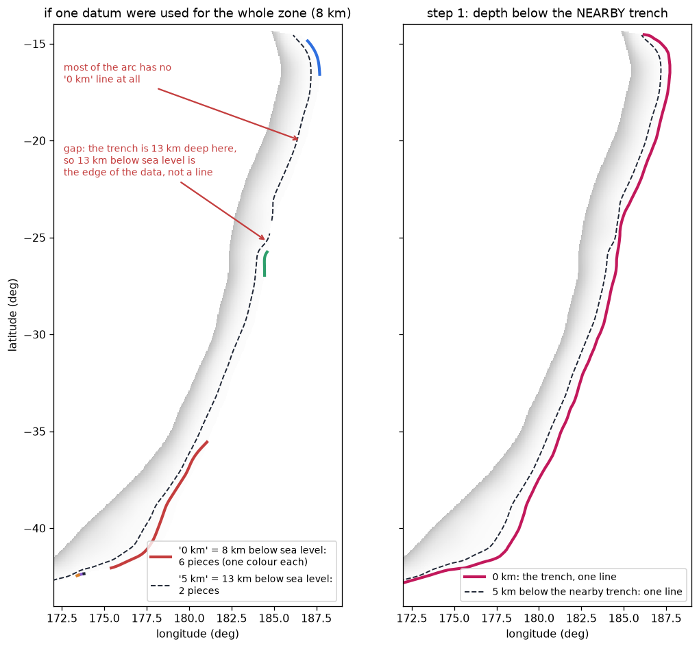
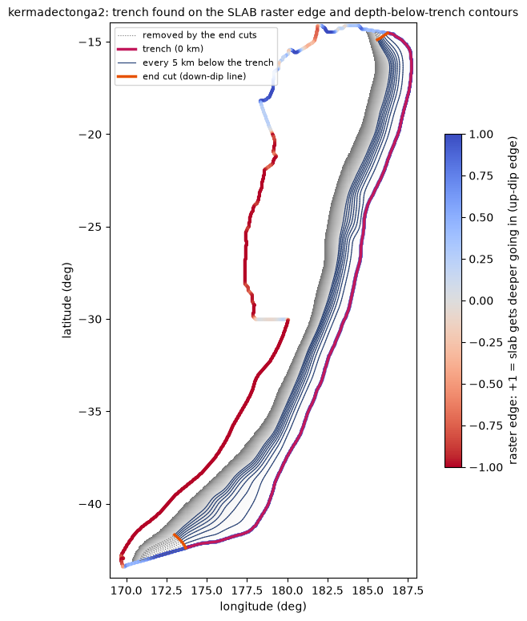
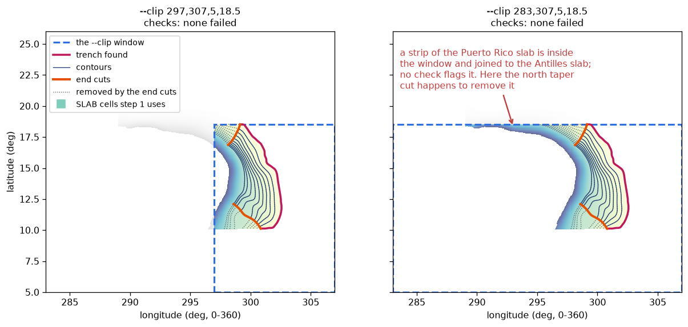
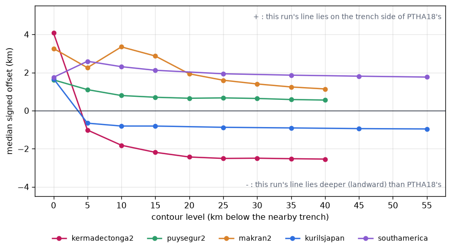
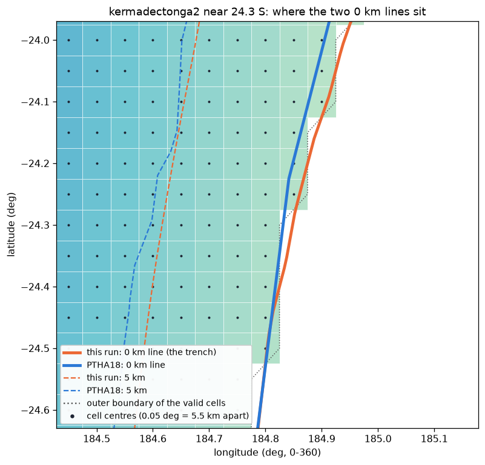

1. Contours from SLAB
Step 1 turns the USGS map of the depth of the sinking plate into the depth lines PTHA18 works with: the trench (0 km) and one line every 5 km below it, down to the depth where large earthquakes stop. "Below it" means below the nearby trench, which changes depth along the zone. This page follows kermadectonga2 through every stage.
At a glance
lib/berryman_params.py; optional clip window.inputs/geometry/<zone>_slab2_contours.shp (one line per level, column level in km below the trench), figures/step1_trench_and_contours.png, data/step1_contours_info.json.Where in the code: steps/step1_fetch_slab2.py (from templates/step1_fetch_slab2.py.tmpl) calls lib/slab_contours.below_trench_contours() and check_contours().
--mesh-fileWith generate.py --mesh-file this step does not use SLAB: it only records the mesh file and step 2 reads it (What is new in v12).The SLAB raster
SLAB is the USGS model of subducting plates: for each cell of a regular longitude-latitude grid, the depth of the top of the sinking plate. There are two versions, and step 1 uses PTHA18's rule to choose: a zone whose name ends in 2 (kermadectonga2, puysegur2, makran2 ...) uses SLAB2.0 (Hayes et al. 2018, 0.05 deg cells); any other (southamerica, kurilsjapan ...) uses SLAB1.0 (Hayes et al. 2012, 0.02 deg cells).
- Find or download. Step 1 looks for the raster in the folder's own
data/slab2/ordata/slab1/first, then in the sharedfrom_scratch_v12/data/slab2/orslab1/(only files you put there by hand), and otherwise downloads it into the folder's own one from USGS ScienceBase (SLAB2.0) or earthquake.usgs.gov (SLAB1.0). If either host blocks the download (a 403: Cloudflare on ScienceBase, USGS's own firewall on earthquake.usgs.gov), the error message itself prints the manual-download link and where to save the file: Troubleshooting. - Read. Depth becomes positive downwards, in km below sea level. kermadectonga2's log:
grid 381 x 601 at 0.05 deg, depth 4.8 to 701.2 km below MSL. - Clip (optional,
--clip): cells outside the window are dropped. See --clip. - One block. Only the largest connected block of cells is kept, so a detached patch can never be taken for part of the zone.
The seismogenic cutoff is the deepest contour: below it, the plate is too hot for large earthquakes. It comes from Berryman et al. (2015), the source PTHA18 used: the zone's dominant segment's maximum down-dip depth minus its trench depth, rounded up to 5 km. kermadectonga2: 40 km (segment "Tonga"). If a zone has no Berryman mapping, step 1 stops and says so.
Finding the trench
SLAB does not say where the trench is. It is part of the edge of the data: the part where the plate is shallowest and gets deeper going inward. The rest of the edge is the deep end of the model or a side edge. Step 1 walks all around the edge of the block and classifies every point:
- Is it shallow? The depth at the edge (nearest cell, 50 km running median) must be at most the shallowest 5% of the edge plus 12 km, and never less than 15 km. kermadectonga2: threshold 17.5 km.
- Does it face up dip? The large-scale depth gradient (smoothed over 20 km), measured 15 km inside the edge, must point inward: its cosine with the inward direction at least 0.5 (+1 means straight inward).
- Longest run. The trench is the longest continuous run of points that pass both tests. Gaps shorter than 250 km that are shallow but noisy (flat sediment prisms, as in Calabria) are bridged.
- Trim the run's ends until the cosine reaches 0.7: a side edge runs down dip, a trench runs along the zone.
- Smooth the line over 15 km (the cell staircase of the raster edge would otherwise show).
- v10_q, ramp rule (
--trench-ramp on, the default): trim each end back, by at most 100 km, while it is more than 3 km deeper than the trench's normal depth there; such an end is the edge of the SLAB data, not trench (below).

A harder case: Calabria's curved, noisy trench bridging and trimming

The trench's own depth
The nearest cell centre to an edge point lies up to one cell inside it, where the plate is already a little deeper. So the depth at each edge point is read from a plane fitted to the 5 x 5 cells around that centre, at the edge point itself, and then smoothed with a 50 km running median along the trench. On kermadectonga2 this makes the trench 0.13 km shallower (median) than the nearest cell centres.

Where in the code: slab_contours.find_trench() (parameters shallow_margin_km=12, updip_cos=0.5, end_cos=0.7, gap_km=250, ramp_rise_km (v10_q; None = v9, 3.0 from step 1), smooth_km=15), running_median(). No rptha counterpart: PTHA18's trench lines were edited by hand.
v10_q: a trench end that climbs like a ramp is not trench
Everything below is measured from the trench nearest to it, so a wrong stretch of trench becomes a wrong datum for its whole neighbourhood. At hellenic's Kefalonia end the up-dip edge of the SLAB2 raster passes both tests above but is the edge of the data: 19.7 km below sea level, climbing to the trench's normal 11.5 km over about 150 km. As the datum of hellenic_west2's northern half, on a slab that is almost flat there, it piled the 25-35 km contours into one line and put a crease of sheared, twisted cells in the mesh.

Changes on the V9 rasters: hellenic 71 km (hellenic_west2's crease gone, area -7.5%), caribbean / antilles 68 km, kermadectonga2 11 km; calabria2, kurilsjapan, makran2, puysegur2 and southamerica identical. --trench-ramp off gives v9's trench. Mesh before and after, and the effect on the rates: What is new in v10 and v10_q.
Where in the code: slab_contours._ramp_trim(), find_trench(ramp_rise_km=, ramp_ref_km=(100, 200), ramp_max_km=100), below_trench_contours(ramp_rise_km=); step 1's TRENCH_RAMP_RISE_KM. Logged as ramp rule (...): start trimmed by N km, end by M km; kept in data/step1_contours_info.json (trench_ramp_rise_km, ramp_trim_km). No rptha counterpart (PTHA18's trench lines were edited by hand). Tests: test_trench_ramp.py.
Depth below the nearby trench (the local datum)
PTHA18's report (section 3.1) says the source zones were converted into "depth below the nearby trench". Sampling SLAB along PTHA18's published contours shows what that means: a point on the 5 km contour is 5 km deeper than the trench point nearest to it. So each cell gets its own reference depth, its local datum:

Why one depth for the whole zone does not work

Where in the code: slab_contours.depth_below_trench().
The contours
D is contoured at 5, 10, 15 ... km, down to the cutoff. The 0 km contour is not contoured: it is the trench line found above. If a level comes out in several pieces, the longest is kept and any other piece longer than 5% of it is reported. Then the zone's two ends are examined and, if needed, cut square: see Clean ends.
contours every 5 km below the NEARBY trench (PTHA18's convention):
trench: 3816 km of the raster's 9125 km outer edge; its depth below sea level p5/median/p95 = 5.0/8.5/10.8 km (this is the local datum)
clean ends (an artefact end is cut along a down-dip line; median width 140 km):
start: CUT, the zone narrows to a point there (34% of its median width at the tip): cut where it is back to 70%; ...
end : CUT, its natural end is 77 deg off square: cut along the down-dip line from the trench's last point; ...
trench after the cuts: 3616 km
5.0 km below trench: one line, 3491 km, 847 points
10.0 km below trench: one line, 3432 km, 840 points
...
40.0 km below trench: one line, 3333 km, 821 points
kermadectonga2_v9/run_final.log, step 1 (shortened). Contour spacing: CONTOUR_SPACING_KM = 5.0 in step 1.

figures/step1_trench_and_contours.png). The SLAB depth in the background, the trench in pink, the contours in dark blue, the parts removed by the end cuts dotted, and the cut lines in orange. Look at it after every run: it shows at once whether the trench was found in the right place and whether the ends look reasonable.The checks that stop a run
Before writing anything, step 1 checks the contours and stops, with the reason, if any of these is true:
| Check | What it means |
|---|---|
| a level between 5 km and the cutoff is not in the raster at all | the SLAB model stops shallower than the cutoff |
| a level is shorter than 30% of the level 5 km above it | the model stops at that depth along most of the zone (compared level by level, because a zone may narrow gradually with depth: calabria2's deepest level is 30% of its trench, and that is fine) |
| a level is a closed loop | not a depth line across the zone |
| a level has a second piece longer than 10% of the main one | a gap in the model or a clip window breaks it; keeping only the longer piece would silently shorten that row |
| more than 5% of a level's interior runs along the edge of the data | the raster stops at that depth there, so the line is the edge of the model, not a real contour |
Where in the code: slab_contours.check_contours(). The clean ends are only attempted when every level was found and none is closed.
--clip: using part of a raster
Some SLAB regions cover more than one subduction zone: the "Caribbean" raster includes the Lesser Antilles, Puerto Rico and Hispaniola. --clip LON_MIN,LON_MAX,LAT_MIN,LAT_MAX (longitudes in the raster's own convention, 0 to 360 for this one) keeps only that window, before anything else is done. It is written into step 1 as CLIP_BBOX.

--clip 297,307,5,18.5, the Lesser Antilles alone (the antilles2 example). Right: --clip 283,307,5,18.5: a strip of the Puerto Rico slab stays inside the window and is joined to the Antilles slab. No check flags it; here the north end's taper cut happens to remove it.slab_contours.find_trench(cut=...)), and the log prints how many km of the edge are the window. hellenic_east2 with that window: 11 x 7, 58% of cells near 50 x 50, 4 folded → 8 x 7, 98%, none (the Hellenic zones have since dropped the window altogether: --trench-ends). antilles2: same grid, 75% → 84%; its north end is now cut as crooked instead of as a narrowing tip. Zones without a window are unchanged byte for byte, and so is kurilsjapan (--auto-clip).--trench-ends: a zone cut at published end points
A clip window is a lon/lat rectangle, so it cuts the slab along straight meridians and parallels, which is not where a source zone ends. For the Hellenic arc, run as hellenic_west2 + hellenic_east2 or as one segmented hellenic2, the zones are defined by Berryman et al. (2015) Table 3.1, which gives each segment's two trench end points (western 19.912E 37.731N to 25.288E 34.202N, eastern 25.228E 34.202N to 28.726E 36.579N, where Cyprus begins). With --trench-ends LON1,LAT1,LON2,LAT2 (default for those three zones, berryman_params.ZONE_DEFAULT_TRENCH_ENDS) step 1 builds the trench, the datum and the contours on the whole raster, so every point is measured from the real nearby trench, and then cuts every contour along the down-dip line through each point. Berryman's points lie on the bathymetric trench, 20-220 km down dip of SLAB2's up-dip edge, so the cut is the line of steepest descent that passes closest to the point (17-31 km for these zones); the cut is not moved afterwards, even when the end is more than 45 deg off square (hellenic_west2's north-west end: 58 deg). The two zones share the midpoint of 25.288E and 25.228E, so they tile exactly. The step 1 figure marks the two points with stars.
--auto-clip: the window derived from the mesh
One clip case does not need any coordinates from you. When step 3's plate-boundary check finds that the mesh runs past the end of its own subduction zone onto the next one, it records which along-strike columns are involved and the lon/lat box of the columns that remain. --auto-clip reads that finding and uses that box:
.venv/Scripts/python.exe <folder>/steps/step1_fetch_slab2.py --auto-clip .venv/Scripts/python.exe <folder>/steps/step_total.py --auto-clip # and re-runs everything
It needs one ordinary run first, because the finding is made from the mesh: run the pipeline, read the report, then re-run with --auto-clip. It replaces any CLIP_BBOX already set in the step, and refuses (explaining why) when there is no finding, or when a lon/lat box cannot separate the flagged tail from the rest of the arc. The full worked case, the detection rule and the kurilsjapan numbers are in step 3.
How close to PTHA18's hand-edited contours
PTHA18 published its contours (NCI, DATA/SOURCEZONE_CONTOURS.zip). Measured along each of this run's lines, the median distance to PTHA18's line of the same level:

Why the trench line sits a little seaward of PTHA18's
Step 1 traces the trench on the outer boundary of the valid SLAB cells, which lies half a cell beyond the last cell centres (about 2.5 km for SLAB2.0's 0.05 deg cells). PTHA18's 0 km line lies on the edge cells themselves: 98% of it falls on valid cells, against 52% for this run's line.

On a real map (the report's map) both lines follow the trench; on kermadectonga2 this run's top edge lies a median 4 km seaward of PTHA18's.
Results on the 8 examples
| Folder | SLAB | Cutoff | Contours | Trench before / after the end cuts | Trench depth p5 / median / p95 |
|---|---|---|---|---|---|
| kermadectonga2_v9 | 2.0 | 40 km | 9 | 3,816 / 3,616 km | 5.0 / 8.5 / 10.8 km |
| southamerica_v9 | 1.0 | 55 km | 12 | 6,149 / 5,914 km | 1.7 / 6.8 / 9.1 km |
kurilsjapan_v9 (--auto-clip) | 1.0 | 55 km | 12 | 2,968 / 2,968 km | 7.0 / 8.4 / 10.1 km |
| makran2_v9 | 2.0 | 40 km | 9 | 961 / 961 km | 3.1 / 5.6 / 7.0 km |
| puysegur2_v9 | 2.0 | 40 km | 9 | 694 / 629 km | 4.1 / 6.9 / 10.8 km |
| calabria2_v9 | 2.0 | 60 km | 13 | 1,050 / 981 km | 6.2 / 11.1 / 12.1 km |
| caribbean2_v9 | 2.0 | 45 km | 10 | 2,308 / 2,308 km | 7.2 / 9.0 / 11.2 km |
| antilles2_v9 | 2.0 | 45 km | 10 | 1,171 / 1,171 km | 7.3 / 8.8 / 14.5 km |
The decision taken at each end of each zone is on the clean ends page, and every zone's figures are on The 8 examples.